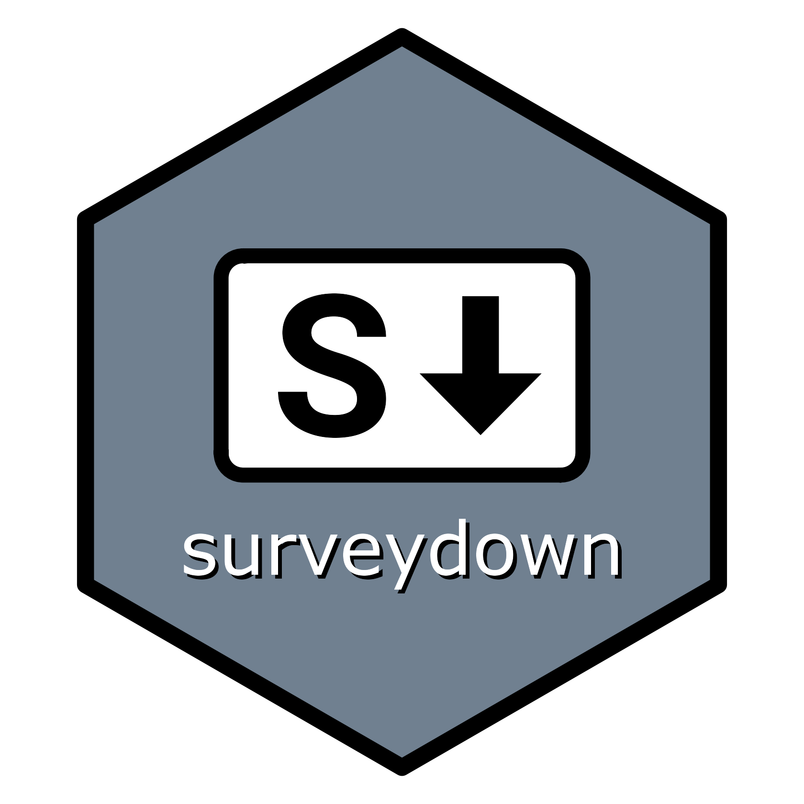

Changelog
Source:NEWS.md
surveydown (development version)
- The database updating is simplified to only write to the database on each page turn and after the survey closes.
- Bug fix: if you added new questions or values to the survey after creating the initial database table, those new values would not have been added to the table. Now they are added.
surveydown 0.3.4
- Bug fix: reactive questions now work with show_if conditions too
- Bug fix: show_if conditions now work even if the target question is on a different page.
- Bug fix: reactive question ids (those defined in the server) were not being considered in
check_skip_show()checks, so you’d get an error that the question id was invalid. -
sd_server()accepts a new parameter called"rate_survey", default toFALSE. IfTRUE, the Exit button will trigger a rating question. IfFALSE, the Exit button will only trigger a double confirmation to ensure the user really wants to exit. - Now the survey will check if there exists an
sd_close()function call. - Now the survey will check if the reserved question IDs are used, including
session_id,time_start,time_end, andexit_survey_rating. There could be more in the future. - Now the
sd_output()function will take care of the styling setting of reactive questions. For example,sd_output(id = "some_question_id", type = "question", width = "80%")will define with of 80% for a reactive question. - Now the
sd_show_if()can take care of cross-page conditional reactive questions.
surveydown 0.3.3
-
sd_server()now has a new parameter calledauto_scroll. It’s default toTRUE, which enables auto scrolling that tracks the user’s input, can be turned off by changing toFALSE. Thanks to the contribution from Zain Hoda. -
sd_question()now has the"matrix"type. The documentation page is updated. - Asterisk, as an indication of required questions, is now moved to the top right corner of question containers.
- Replaced the default shiny alert with
sweetalert.
surveydown 0.3.2
- Added
sd_completion_code()function. - Bug fix: make stored values accessible with
sd_output()withtype = 'value'argument. Previously only question values could be displayed in the UI withsd_output(). -
sd_add_question()to instantly create a question template. Defaults to type of"mc"but also accepts all other types ("text","textarea","numeric", etc.). The function call will delete itself after running. -
sd_add_page()to instantly create a page template. Make sure to run this function outside any division or code chunk. The function call will delete itself after running.
surveydown 0.3.1
- Improved efficiency in
database_uploading()so only the changed fields get written, and also the writing happens after checking theshow_ifconditions (addresses #100). - Modified default rendering behavior to not delete the rendered html file.
- Modified the
refresh_intervalargument insd_get_data()as defaulting toNULL, which means the data will not be reactively fetched, regardless of the context it is used in. The data will only continuously refresh ifsd_get_data()is called within a reactive context andrefresh_interval > 0. - Modified messaging from
sd_set_password()to not print out user’s password and provide clearer instructions. -
sd_show_password()added to show a stored password. The user will be prompted to double confirm that they want to show it. If there is no password, the user will be prompted so, along with a message of usingsd_set_password()to create the password.
surveydown 0.3.0
- Introduced
sd_ui()function to set placeholders for the shiny app ui. - Heavily revised how
skip_ifandshow_ifworks, removingskip_if_customandshow_if_custom. Now they work similar to thecase_when()function, where you provide the formulacondition ~ targetfor each condition in either function. These are also provided globally inside theserver()function usingsd_skip_if()andsd_show_if(). - Require that the survey file be named
"survey.qmd". - Added
sd_include_folder()function so users can add a folder to the shiny resource path. - Automatically include the
images,js,css, andwwwfolders as well as folders to quarto files to the shiny resource path when the package loads. - Heavily modified how
sd_next()works to improve page navigation and ensure that eachsd_next()button has a unique id based on the current page. - Removed the quarto extension.
-
sd_create_survey()changed to sourcing template directly from the package. Two parameters are provided. The first parameter ispath, which defines the relative path of the target. If left blank, the path will be the current working directory. The second parameter isstructure, which defines which structure of the template the user wants to choose, default as"single"and can be changed to"multi". -
sd_deploy()as a wrapper function ofrsconnect::deployApp()to deploy the survey. -
sd_update()as a replacement ofsd_update_surveydown()to update the package. -
sd_version()as a replacement ofsd_check_versions()to check for the current version and the latest version. -
sd_close()function to create a close button for the survey.
surveydown 0.2.4
- No need to use
<br>above the Next button anymore. The Next buttons can now be in the same chunk as the questions as spacing has been added. - Modified margins on top and bottom. Solved the large gap created by hidden questions.
- Fixed an issue with
sd_store_value(). There used to be a problem if a value is a list with multiple entries. Now they are collapsed with commas due to the application offormat_question_value()on thevaluevariable. - Removed the
reactiveargument forsd_get_data(). Now all functions that should be compatible with both reactive (server) and static (ui) conditions will automatically match, without necessity of explicitly specifying them. -
sd_redirect()updated with a parameter callednewtab, defaults toFALSE. IfTRUE, the redirection link will be opened in a new tab. If used together withdelay, the new tab might be blocked by the browser after count-down, but the user click will not be blocked. - Improved the
database_uploading()function to secure it from possible SQL injection attacks.
surveydown 0.2.3
- Solved the speed problem for database connections: refactored
sd_server()for efficiency; converted local data storage to lists instead of data frames. - Assigned
session_idas the leading column, and removed therespondent_idcolumn.
surveydown 0.2.2
-
sd_redirect()to create redirection to external links, either by providing a button, a countdown, or both. This function can be called both in the survey body and the server chunk. -
sd_get_url_pars()to reactively get the parameters in the URL. - The above 3 functions work together to retrieve and redirect URL parameters so that surveydown is compatible with survey panels.
- Now
sd_next()andsd_redirect()both support the “Enter” key for a better user experience. - Add automatic clean up in
sd_database(). -
sd_output()function that replaces the originalsd_display_question()(by specifyingtype = "question") andsd_display_value()(by specifyingtype = "value"). The original 2 functions are depreciated and will be removed in future updates. Ifsd_output()is only used with"id"specified, it works the same asshiny::uiOutput().
surveydown 0.2.1
- In
sd_database(), nowdb_nameis changed todbname, andtable_nameis changed totable, for consistency with Supabase, and simplicity of parameter names. - Now the error message of
sd_database()will also prompt “If you have verified all connection details are correct but still cannot access the database, consider setting thegssencmodeparameter to"disable"in thesd_database()function.” We don’t encourage users to disablegssencmode, since it’s more secure to have it on, but if users encounter with connection error, this will be a possible solution. - Bug fix: A bug was introduced when restructuring the
sd_server()function in the last update that affected numeric questions being determined as answered or not, that is now fixed. - Fixed issue #80: If
sd_display_value()was used multiple times on different question IDs, it could only fetch the last user input. Now it’s fixed. - Renamed main lua file in
inst/quarto/filtersfromsurveydown.luatosd_main.luaand updated the extension v0.2.5 to call this via a more robust, cross-platform approach. - (Extension) Renamed the extension lua filter to
sd_wrapper.luato avoid naming conflict. Now the extension is only used as a wrapper. Thesd_main.luaand related CSS and JS files are all in the R package.
surveydown 0.2.0
- Moved
sd_store_value()andsd_copy_value()to the server.R file (these are server operations). - Added
respondent_idvariable that tracks the respondent based on their starting the survey. - Restructure the server to be more efficient.
- Now the required questions can successfully bypass the hidden required questions of all types.
surveydown 0.1.2
- Moved the main surveydown.lua file into the package at inst/quarto/filters. The surveydown Quarto extension is now just a wrapper to load this file, so the extension won’t likely need to update any further as all updates can be made in the package lua file.
- Changed
jhelvytosurveydown-devin version control functions. - Now if there are duplicated
page_idandquestion_id, the survey will stop and show error. - Removed roxygen2 documentation from non-exported functions.
surveydown 0.1.1
- Added
sd_get_data()with areactiveargument to enable reactive data fetching. -
sd_question()now has areactiveargument to enable reactive questions, andsd_question_reactive()was removed. - Made
sd_admin_enable()internal, changed toadmin_enable(). - Removed
sd_admin_ui()andsd_add_admin()from the package. - Moved the surveydown.css and page_nav.js files into the R package and out of the Quarto extension.
- Added keep alive functionality to the survey.
- Bug fixes:
- The admin page password was looking for the
SUPABASE_PASSWORDenvironment variable, but it should beSURVEYDOWN_PASSWORD. - The data fetching was not working to download the data as a CSV file in the admin page, now uses
sd_get_data()and works. - The
show_if_customlogic was not working for multiple conditions, now it does. - The
skip_if_customlogic could error if a condition wasNULL(fixed withisTRUE()). - In
sd_config(), items were being assigned with the<-operator, causing them to be deleted when the thing being assigned wasNULL. Now changed to=.
- The admin page password was looking for the
surveydown 0.1.0
- Added
sd_display_value()for displaying a question value based on the questionid. - Added
sd_copy_value()for making a copy of a question value, which may be needed if you need to display something more than once since you can’t make more than one object with the sameid. - Changed
sd_reactive_output()tosd_display_question(). - Changed how
sd_store_value()works to avoid a global environment, and changed the arg name fromnametoid. - Added
sd_add_admin()function to react to admin_page condition, if set to true an ‘Admin’ page will be created for survey creators. - Added
sd_admin_ui()function to create the UI for the Admin page button. - (extension) JS files removed from extension to R package. Now the extension only contains the
.luafile and the css styles.
surveydown 0.0.9
- Required questions are now moved to
sd_config()as a separaterequired_questionsargument, instead of being defined insd_question(). - Two new functions for supporting reactive questions:
sd_question_reactive()andsd_reactive_output(). -
sd_store_value()function to store variables into the database. For example,sd_store_value(respondentID, "respID")will store the value ofrespondentIDinto a column named"respID". If the name is not provided, the column will be named as its original variable name, in this case,respondentID. - Enhanced robustness for progress bar. Now the progress bar will update based on user’s input.
- Added a
timestampcolumn in the beginning of the result dataframe. - Now both Mac and PC will have no problem connecting with supabase.
- Updated all roxygen2 documentation texts.
surveydown 0.0.8
-
sd_database()function added withpauseargument default toFALSE. Ifpause = FALSE, database will be properly connected; ifpause = TRUE, a local CSV will be generated and survey results will be stored there. -
sd_config()function haspreviewremoved due topauseinsd_database. - For
pause = FALSE(aka default), warning messages will be shown for missing or incorrect password, and will prompt the usage ofsd_set_password(). - Initiation of the
admin_pageargument inconfig.R.
surveydown 0.0.7
-
sd_set_password()function to set the supabase password as the survey environment variable. This function takes in a string, which should be your supabase password. We recommend you to only run it in the R Console so that your password does not appear in the.qmdfile. - (Continue) Upon running
sd_set_password(), an.Renvironfile will be created in your survey project root directory. In this file,SUPABASE_PASSWORD=your_passwordwill be created, withyour_passwordbeing whatever your input ofsd_set_password(). Then,.Renvironwill be added to your.gitignorefile to avoid being pushed to GitHub. - (Continue) If there is already an
.Renvironfile,SUPABASE_PASSWORD=your_passwordwill be concatenated to the end. If there is already a definition ofSUPABASE_PASSWORD, it will be overwritten. If there is no.gitignorefile, it will be created. If there is already an.Renvironin.gitignore, it won’t be duplicated. - (Continue) All the above explanation means that you simply run
sd_set_password()once to define supabase password for your survey project. It takes care of the rest of necessary operations, and you can rerunsd_set_password()to change the password, with the previous value safely overwritten.
surveydown 0.0.6
- In
sd_database, agssencmodeargument is added and set to “prefer” by default. In some cases, local deployment may fail due to network environments such as VPN settings. It can be solved by settinggssencmode = "disable"in the surveyqmdfile. - Now the survey can be updated even AFTER its deployment. You may add, delete, or modify a question. The old question column and its time stamp, will stay where they were. The new question column and time stamp will be concatenated in the end of the table.
- (extension) Now the
example.qmdsurvey has instructions for supabase configuration and shinyapps deployment. - (extension) Now the
.gitignorefile has.Renvironincluded. This file will store supabase password and is essential for shinyapps deployment. Eliminating this file from pushing to GitHub will ensure that your password is only saved locally.
surveydown 0.0.5
-
create_survey()changed tosd_create_survey()for function name consistency. -
sd_update_extension()function to update the surveydown Quarto extension. -
sd_check_versions()function to check the version of both the R package and the Quarto extension. If any of them don’t match with the latest version, there will be a suggestion to run thesd_update_surveydown()function. -
sd_update_surveydown()function to update both the R package and the Quarto extension.
surveydown 0.0.4
- (extension) Raleway Font is set as the default font of the survey pages. Can be overwritten in the YAML header with the
themecommand using the bootswatch themes or a customscssfile. - (extension) Default page background is set as “#f2f6f9” (a light blue color). Can be overwritten in the YAML header with the
backgroundcolor. - (extension) Questions are now encapsulated in a container that distinguishes from the descriptive texts.
- (extension) Options of
mc_buttonandmu_multiple_buttonstypes of questions are now centered. - Now the
surveydown::create_survey()function will download the whole extension repo, containing the extension, an example survey, and an RStudio project.
surveydown 0.0.3
- Now
show_ifcan be applied to multiple options of the same question, which allows users to have more than one option in a question that triggers the revealing of a hidden question. - Now if the “required” question is hidden, it will not trigger the page warning of “not all questions are answered”.
- (extension) Now users can have a page with the same name of its ID and its header, regardless of capitalization. For example, users can now have a page ID being “#educational”, and its header being “#Educational”. This sounds as it should be, but in previous versions, the page hiding logic will show bug if page ID is the same as page header.
surveydown 0.0.2
- Support added for the
requiredargument insd_question(), which allows users to force a question to be required. If not answered, a popup window blocks the user from continuing to the next page. - The supabase backend is now connected and documentation on how to set up the database is complete.
- Initial setup for tests added